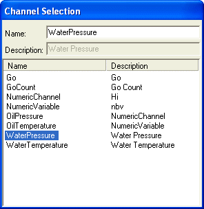

The ChannelSelector control provides a button which when pressed displays a toolbox style floating dialog containing a list of channels. The user can then drag and drop these channels onto any drag and drop enabled controls to display the channels value. Pressing the button again removes the dialog from display.
The channels displayed in the channel selector are taken from one of the channel collections displayed in the channel explorer so there is no need to make all channels available to the user.